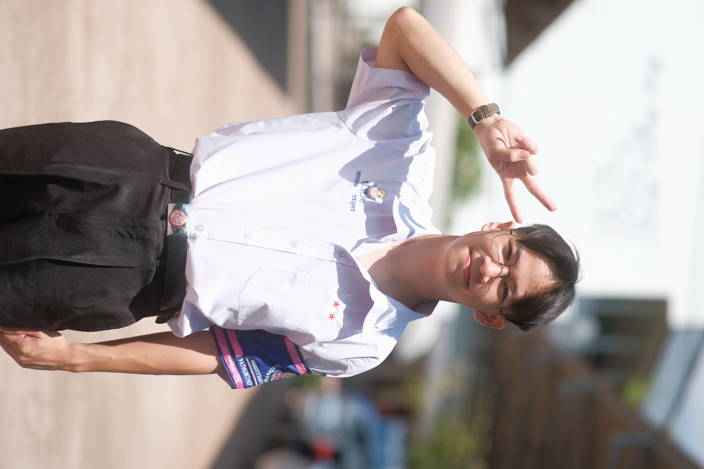

SINTERNAL / POSITIVE↗
Strengths
The things I bring to the table.
UNIVERSITY PORTFOLIO / PERSONAL REFLECTION
A reflection on how I think, how I support others, and where I want to grow.
My goal: an undergraduate degree in semiconductors.

Curious about electronics. Ready to keep learning.
01 / THE BIG PICTURE
SWOT helps me look inward at my strengths and weaknesses, and outward at the opportunities and challenges around me.
The things I bring to the table.
The patterns I want to work on.
The possibilities I can make use of.
The outside challenges I need to consider.
02 / MOVING FORWARD
Small actions can help me turn self-awareness into progress.
POSSIBLE NEXT STEPS · TO CONSIDER
Put ideas into actionChoose one idea from a brainstorm and break it into a small first task.
Check in with myselfPause and name what is difficult before deciding that everything is fine.
Learn at my own paceAllow time to practise, ask questions, and review new material.
03 / GET IN TOUCH
You can reach me through the channels below.
I’m still learning.
That’s part of the story.